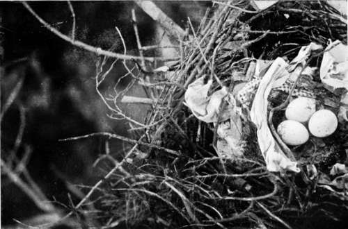

Birds'-Nesting In Spain. Part 8
Description
This section is from the book "Bird-Hunting Through Wild Europe", by R. B. Lodge. Also available from Amazon: Bird-Hunting Through Wild Europe.
Birds'-Nesting In Spain. Part 8
In the extensive pine-forests which intersect and surround the marismas there was an equal change. The whole district had passed into different hands, the Spanish Duke, the former owner, having sold it to a capitalist. In the place of the solitude I had found in 1897 there were now armies of men, with scores of wagons and horses, engaged in felling the largest of the trees and in conveying them to the river, where a great steam saw-mill cut them up for tramway sleepers before being shipped to their destination ; and the peaceful stillness of the forest was broken by the buzz and hum of machinery, the sharp strokes of the axe, and the shouts of the labourers.
As we gazed around us at the havoc they had made, our hopes for Eagles and Kites dwindled away to zero. Every tree of any size had vanished ; the charcoal-burners' fires were disposing of the piles of branches, and even the very roots and stumps, which were all that was left to remind me of the monarchs of the forest of former years, were being howked up and dragged out of the earth for charcoal.
It seemed quite ridiculous to expect an Eagle, or even a Kite, to build on the puny little trees which we saw. But to our surprise we found many Kites and Black Kites nesting on the small pines, and whenever we saw a silver poplar towering over the surrounding pines it was always worth a visit. Many Booted Eagles (Aquila pennatd) were nesting in them.
And here I may mention that the silver poplar is a favourite tree with the large raptores, and is often chosen by them to nest in : I can recall many instances. Besides these Booted Eagles we found in these trees a nest of the Short-toed or Snake Eagle (Circa'etus gallicus). In Albania, in 1906, I found a nest of the Sea Eagle (Halia'etus albicilla) in a silver poplar, and in the following year nests of Black Vulture (Vultur monachus) and Imperial Eagle (Aquila imperialist in the same kind of tree in a Roumanian forest.
To show the abundance of raptorial birds in these forests, in a space of not more than a few acres were the nests of a Black Kite, a Short-toed Eagle, and a Booted Eagle, and none of them were half a mile from a village.
The first nest we found was that of a Black Kite, placed at the summit of a small pine-tree. As it contained three well-marked eggs, a choice collection of old rags, and an empty matchbox, I carried the camera up and photographed the nest in situ, as it has been said that the Black Kite does not use rags in constructing its nest. We had seen the bird leave the nest, so that there was no doubt about its being that of a Black Kite (Milvus migrans). The Common Kite (Milvus regalis) not only uses rags, but also horse dung, and almost invariably a piece of newspaper is to be found in its nest.
Nest Of Black Kite (Milvus Migrans), Showing Arrangement Of Rags
Nest Of Short-Toed Eagle (Circaetus Gallicus)
A few yards farther on was an enormous nest in a silver poplar, from which a Short-toed Eagle flew off. M-, who had climbed up, had some difficulty in reaching over the edge of the nest, but shouted that he could feel an egg. This he brought down, and as this Eagle lays but one egg, generally speaking, we naturally supposed that there were no more. Then, as it was impossible to get above the nest for a photograph without knocking it all to pieces, we went back for a saw and a rope, and I ascended the tree and cut off the whole of the upper part of it, including the nest, and lowered it to the ground by means of the rope. It was a tough job, and required careful engineering to avoid a broken limb or being swept out of the tree with the fall; but by cutting through a double stem, and using the fork that was left as a pulley for the rope, and having two men below to hang on with all their strength and weight at the moment when the saw cut through the great mass above me, we managed to get it safely to the ground without accident. But, most unfortunately, during this lowering a second egg rolled out of the nest, and was of course smashed. It is so extremely unusual for this Eagle to lay two eggs that we never thought of the possibility of there being another one.
Not a hundred yards from these two nests we found a Booted Eagle breeding in a poplar. And as the nest was not at a great height, and could be clearly seen from the ground, I constructed a shelter of tamarisk bushes, meaning to come the next day and try to photograph the bird itself before we started on a three days' visit to another distant part of the marismas. It was while waiting at this nest that I first heard the curious, musical note of the Booted Eagle.
Prince Rudolf says : ' The Pygmy Eagle has a fine, melodious voice-I might really speak of it as the singing Eagle; for the varied notes which it utters constitute a song, short indeed, but still not a call, and more like the utterances of the song-birds than the shrill whistle of the other raptorial birds.'
This last sentence exactly coincides with my experience. While crouching behind my rude shelter of branches I had heard a curious and rather melodious note repeated several times, with which I was quite unacquainted, and wondered what it could be. It resembled the sounds ' kivi-kivi,' and from the peculiar quality of the note I thought it proceeded from some bird about the size of an Oriole, and looked around me to try to discover from whence it proceeded.
Booted Eagle At Nest (Aquila Pennata)
To my great surprise I found that it was the Booted Eagle, the owner of the nest. (The Booted Eagle is now, of course, universally recognized as identical with the Pygmy Eagle.) The bird was sitting on the ground quite close to me, in fact not more than six or seven yards away. But the moment I saw it it flew up, and I was afraid that it had seen me and taken the alarm. However, within half an hour it glided past me, low down, and swept upwards in a graceful curve to the nest, perching in the nest itself so that I could only see its head. It did not stay there more than a moment or two, however, but flew off to return again presently. This time it perched on the thick branch near the nest, where I had a good view of it, and on this same branch I photographed it twice before I left. The photograph shows well the peculiar feathering, right down to the toes, which gives it its name of ' Booted ' Eagle, and caused it to be called the ' Eagle with the breeches' by Prince Rudolf's Slavonian climber.
Continue to: